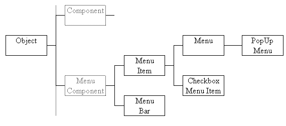
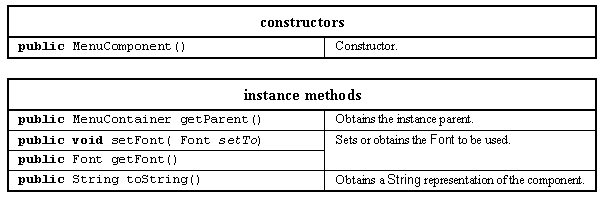
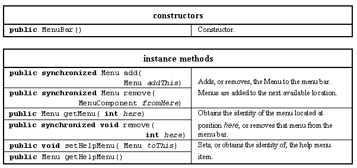
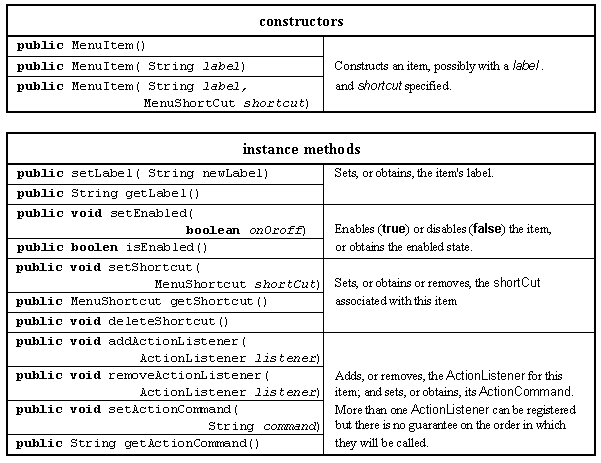
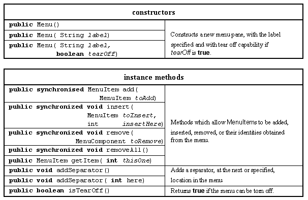
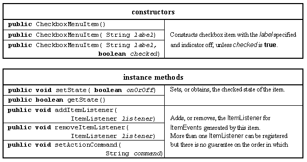

The facilities for the construction of menus are supplied by the Java AWT in a class hierarchy based upon the MenuComponent class, which is a sibling class of the Component class whose hierarchy has been used so far. The MenuComponent class hierarchy diagram was given Figure 2.16 and is repeated in Figure 6.3 for convenience, again the Object class is not part of the AWT but has been included to show the relationship between the AWT classes and it.

Figure 6.3 The Java AWT MenuComponent class hierarchy.
The base of the class is the abstract MenuComponent class which, like the Component class, provides a collection of resources which are common to all other MenuComponents. Its most important resources are given in Table 6.1.

Table 6.1 Major resources of the MenuComponent class.
The MenuBar class supplies a menu bar upon which the main menu buttons, and their pull-down menus, can be attached. Its major resources are given in Table 6.2.

Table 6.2 Major resources of the MenuBar class.
A MenuBar, once constructed, can only be added to a Frame instance using the Frame's setMenuBar() method. As mentioned in Chapter 3 a Frame is not an extension of, or a parent class of, the Applet class and provides an independent top level window on the desktop. This means that application level main menus cannot be presented within a Applet window inside a browser, but only in a separate top level window on the desktop.
The reason for this restriction is that the provision of a top level menu within an applet might result in two top level menus being presented to the user. For example: when the applet is executed within a browser, the browser would supply a top level menu and if the applet were to provide a second then this would undoubtedly be confusing to a user. Within the Apple, NextStep and OpenStep environments this would be particularly confusing as these environments support only a single top level menu, visible at the top of the screen, and change the options on the menu as the user moves focus from application to application. By insisting that a top level menu in a Java artifact must be associated with a Frame instance this problem is avoided.
If a MenuBar contains a help menu button, as nomiated by the use of the setHelpMenu() method, it is always presented as the right most button on the menu bar. All other buttons are presented in a left right location determined by the sequence they were added to the menu bar.
The MenuItem class provides the entries which can appear on the pull down and cascading menu panes; its major resources are presented in Table 6.3.

Table 6.3 Major resources of the MenuItem class.
The Menu class provides the menu panes which provide the pull-down and cascading menus and the buttons which they are connected to. Its major resources are given in Table 6.4.

Table 6.4 Major resources of the Menu class.
A TearOff menu can be detached from the top level menu and remains available to the user in a separate window, allowing them to make extensive use of it without having to continually re-post it from the top level menu. Finally the CheckboxMenuItem class is used to supply check box items on a menu, its major resources are given in Table 6.5.

Table 6.5 Major resources of the CheckboxMenuItem class.
There is no support in the AWT for a set of CheckboxMenuItems to behave as a set of radio buttons, allowing only one of them to be checked at a time. If this behavior is required then it has to be supplied by the developer, as will be illustrated below. The use of menu accelerators, supplied by the MenuShortcut class, will also be described below.